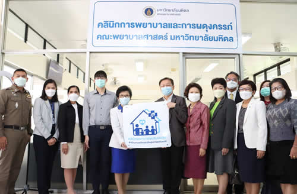

| ประชาสัมพันธ์ |
คณะพยาบาลศาสตร์ มหาวิทยาลัยมหิดล เปิด “คลินิกการพยาบาลและการผดุงครรภ์” |
| ณ หอพักคณะพยาบาลศาสตร์ มหาวิทยาลัยมหิดล บางขุนนนท์ เพื่อบริการดูแลสุขภาพแก่ประชาชน วันที่ 21 กันยายน 2565 คณะพยาบาลศาสตร์ มหาวิทยาลัยมหิดล จัดพิธีเปิด “คลินิกการพยาบาลและการผดุงครรภ์” ณ หอพักคณะพยาบาลศาสตร์ มหาวิทยาลัยมหิดล บางขุนนนท์ โดย รองศาสตราจารย์ ดร.ยาใจ สิทธิมงคล คณบดีคณะพยาบาลศาสตร์ มหาวิทยาลัยมหิดล เป็นประธานในพิธีกล่าวเปิดคลินิกการพยาบาลและการผดุงครรภ์ ทั้งนี้ได้รับเกียรติจาก นายแพทย์จักรกริช โง้วศิริ รองเลขาธิการสำนักงานหลักประกันสุขภาพแห่งชาติ (สปสช.) เข้าร่วมงานและมอบป้าย “คลินิกพยาบาลชุมชนอบอุ่น” เพื่อแสดงถึงการเป็นหน่วยบริการร่วมให้บริการในระบบหลักประกันสุขภาพแห่งชาติ โดยมีคณะผู้บริหาร คณาจารย์ จากคณะพยาบาลศาสตร์ มหาวิทยาลัยมหิดล และผู้แทนจากหน่วยงานใกล้เคียง รวมทั้งประชาชนในเขตบางกอกน้อยเข้าร่วมงาน กิจกรรมภายในงาน มีการบริการตรวจสุขภาพจากคณาจารย์พยาบาลผู้เชี่ยวชาญ บริการฟรี อาทิ การคัดกรองมะเร็งเต้านม คัดกรองพัฒนาการเด็ก การตรวจระดับน้ำตาลในเลือด การจัดการอาการที่พบบ่อยในผู้สูงอายุ และการคัดกรองปัญหาสุขภาพจิตทุกช่วงวัย เป็นต้น โดยจะให้บริการตั้งแต่วันที่ 21 - 23 กันยายน 2565 สำหรับคลินิกการพยาบาลและการผดุงครรภ์ นี้ จัดตั้งขึ้นโดยมีวัตถุประสงค์ เพื่อเป็นหน่วยบริการสุขภาพที่ประชาชนสามารถเข้าถึงบริการได้ง่าย รวดเร็ว ปลอดภัย และเชื่อถือได้ สอดคล้องกับนโยบายของสำนักงานหลักประกันสุขภาพแห่งชาติ (สปสช.) และสภาวิชาชีพ รวมทั้งผลสำรวจที่พบว่าประชาชนต้องการการดูแลจากบุคลากรของคณะพยาบาลศาสตร์ ซึ่งเป็นพยาบาลที่มีความเชี่ยวชาญในการดูแลประชาชนทุกกลุ่มวัย โดยคลินิกการพยาบาลและการผดุงครรภ์นี้ เป็นหน่วยบริการร่วมในระบบหลักประกันสุขภาพแห่งชาติ หรือ “คลินิกพยาบาลชุมชนอบอุ่น” เพื่อให้บริการตรวจรักษาโรคเบื้องต้น การคัดกรองความเสี่ยง การป้องกันโรค และการให้คำปรึกษาทางสุขภาพ ตลอดจนการส่งต่อบุคคลที่มีความเสี่ยงหรือบุคคลที่มีการเจ็บป่วยเข้าสู่ระบบการรักษาพยาบาลที่เหมาะสม เพื่อลดความาแออัดในโรงพยาบาล คลินิกการพยาบาลและการผดุงครรภ์ ณ หอพักคณะพยาบาลศาสตร์ มหาวิทยาลัยมหิดล บางขุนนนท์ นั้นจะเปิดให้บริการแก่ประชาชนในทุกวันจันทร์-ศุกร์ ตั้งแต่เวลา 8.00 - 16.00 น. โดยประชาชนสามารถเข้ารับบริการดูแลสุขภาพได้ จากคณาจารย์พยาบาลวิชาชีพผู้มีความเชี่ยวชาญต่อไป |
 |